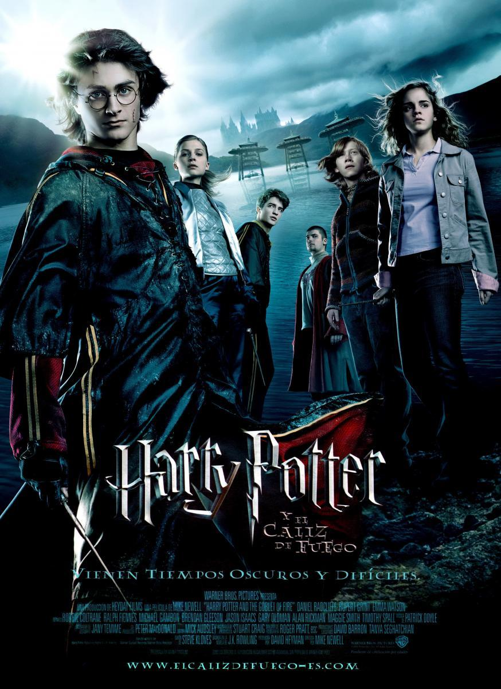

| Peliculas | Fecha en que se lanzo | Resumen | Avanzes |
| 2001 | Las aventuras del trío de amigos conformado por Harry Potter, Hermione Granger y Ron Wesley inician en esta película. Potter, interpretado por el actor Daniel Radcliffe, comienza a recibir cartas provenientes del Colegio Hogwarts de Magia y Hechicería sin saber que significan. Durante casi 11 años vivió con sus tíos maternos, quienes no poseen habilidades mágicas e hicieron todo lo que pudieron para ocultarle al niño su pasado. Sus padres fueron magos y resultaron asesinados por Lord Voldemort cuando él era solo un bebé.
Dumbleadore es el director de Hogwarts y el encargado de revelarle a Harry su herencia mágica y también la fortuna dejada por sus padres. Acompañado por el guardabosque Rubeus Hagrid, Potter sale de casa de sus tíos y toma por primera vez el tren del andén nueve y tres cuartos. Allí conoce a Hermione (Emma Watson) y Ron (Rupert Grint). La piedra filosofal es un antiguo objeto con propiedades mágicas guardado en el colegio, el cual Harry sospecha está en peligro de ser robado por el profesor Severus Snape. A lo largo de la cinta el protagonista intenta hacer ver al resto de profesores el riesgo que corre la piedra por Snape | ||
| 2002 | Días antes de que Harry Potter comenzara su segundo año en Hogwarts, recibió la visita del elfo doméstico Dobby. Esta criatura le advirtió a Potter que no debía regresar al Instituto, ya que “hay un complot para causar terror y muerte” donde él se verá involucrado. Este caos se genera cuando la cámara secreta es abierta y con ella varios alumnos del colegio fueron atacados sin que hubiese pistas del culpable. Una vez más junto a sus amigos Hermione y Ron, el protagonista avanza en la historia para resolver el misterio que envuelve a la leyenda de la cámara.
Con el descubrimiento del diario de Tom Riddle en manos de Ginny Wesley, la hermana de Ron, se conoce más sobre el pasado de Lord Voldemort. El futuro de Hogwarts está en peligro debido a la apertura de la cámara 50 años después de la última vez. La leyenda indica que Salazar Slytherin, uno de los 4 fundadores del colegio, creó la cámara a espaldas de los demás. Esto con el objetivo de limpiar el instituto de los “sangre sucia” o “sangre impura” como se le conoce de forma despectiva a los hijos de muggles (humanos no magos). Al final de la historia se conoce cuál es el monstruo que vive en los subsuelos. | ||

|
2004 | Para continuar con la secuencia de Harry Potter, seguimos con este filme donde se presenta a Sirius Black como un presunto asesino antiguo seguidor de Voldemort. Black se convirtió en la primera persona que logró escapar de la prisión de Azkaban poco antes del inicio del tercer año de estudios de Potter. El Mundo Mágico entra en alerta ante la posibilidad de que el prófugo intente acercarse a Harry para vengar la caída del “Señor Tenebroso”. Desde el comienzo de las actividades escolares se refuerza la seguridad en Hogwarts, aunque nada parecerá evitar el temido encuentro.
Por primera vez se presentan a los dementores, unas criaturas que cumplen función de centinelas de la prisión y se encargan de robar los recuerdos felices de las personas. Estos espectros atacan a Harry debido a los momentos difíciles que él ha atravesado en su vida, siendo el encantamiento Patronus la única solución para repelerlos. Black consigue entrar en Hogwarts gracias a su habilidad de animago (capacidad para transformarse en animal). Finalmente, se da un duelo entre Sirius, Remus Lupin, Severus Snape y Peter Pettigrew, donde Potter descubrirá detalles inesperados sobre sus padres. | |
|  | 2005 | Entre las películas de Harry Potter en orden, esta fue la segunda en terminar como líder anual en recaudación luego de la piedra filosofal. La acción inicia con la suspensión del Campeonato Mundial de Quidditch tras la aparición de los mortífagos (antiguos seguidores de Voldemort). Este hecho, sumado a las continuas pesadillas de Harry hace presagiar que el poder del “Señor Tenebroso” está renaciendo. La Marca Tenebrosa queda dibujada en el cielo de la sede principal del Mundial y siembra el terror en el Mundo Mágico.
Hogwarts es la sede del Torneo de los Tres Magos y recibe a los estudiantes de los colegios Beauxbatons y Durmstrang. En esta competencia deberán enfrentarse un representante de cada institución a lo largo del año en tres pruebas. Sin embargo, para sorpresa de todos Harry es escogido para formar parte del torneo a pesar de ser menor de 17 años y ya Hogwarts tener a su elegido Cedric Diggory (Robert Pattinson). De esta forma se presentan cuatro jóvenes hechiceros para levantar el trofeo, donde en la última prueba se descubre una trampa escondida a lo largo de toda la trama. | |

|
2007 | La cronología de Harry Potter prosigue cuando el Ministerio de Magia se niega a aceptar el regreso de Lord Voldemort. Consciente del peligro que corre la comunidad mágica, Albus Dumbledore crea la Orden del Fénix, una organización secreta que se centra en tomar medidas protectoras. El Ministro de Magia, Cornelius Fudge, no reconoce las versiones ofrecidas por Dumbledore y Potter sobre la vuelta de Voldemort. En su lugar, envía a Dolores Umbridge como inspectora y profesora durante el año escolar en Hogwarts, supervisando que no suministre información contraria a lo que indica el Ministerio.
Umbridge culmina el año como directora del Instituto luego de una serie de decretos del Ministerio. Como respuesta, Harry crea junto a un grupo de compañeros de clase el Ejército de Dumbledore, como preparación para un inevitable enfrentamiento. Tras una serie de visiones en sus sueños, Potter viaja a Londres con algunos de sus amigos para ir a la sede del Ministerio. Allí se enfrentan a los mortífagos y se da uno de los combates más emocionantes de toda la saga de películas entre Dumbledore y Voldemort. Al final, se revela una profecía que será clave en el resto de la historia. | |
| 2009 | El mundo entero se llena de terror ante la escalada de Lord Voldemort, quien ataca a muggles sin descanso y le asigna una tarea a Draco Malfoy. Snape jura proteger al joven de Slytherin en su misión e incluso se le encomienda terminarla en caso de que Malfoy no pueda. Las medidas de seguridad en Hogwarts resultan inútiles, ya que algunos estudiantes son atacados sin mayor explicación. Los mortífagos avanzan según los planes del “Señor Tenebroso” y se aproximan al fatal objetivo principal del año. Harry Potter descubre un curioso libro de pociones propiedad del “Príncipe Mestizo”, el cual le ayuda en las clases.
Dumbledore le muestra a Harry más sobre el pasado de Lord Voldemort como una forma de prepararlo para la inevitable batalla final. A través de los recuerdos del profesor Horace Slughorn se descubre que Voldemort dividió su alma en 7 objetos conocidos como “Horrocruxes”. Para crear dichos artefactos el archienemigo de toda la saga debía sacrificar una vida humana y utilizar un encantamiento de magia oscura. Al final de la película ocurre un sorprendente hecho que involucra a Snape, quien además le confiesa a Potter que él es el príncipe mestizo. | ||

|
2010 | Hay nuevo Primer Ministro de Magia, Rufus Scrimgeour, quien desde el inicio deja claro el grave peligro que corre el Mundo Mágico ante el regreso de Voldemort. A pesar de que en teoría sería el último año de estudios de Harry, Hermione y Ron, estos no pueden asistir a clases debido a que Hogwarts fue tomado por los mortífagos. En su lugar, inician la búsqueda de los horrocruxes restantes, con la ayuda de los miembros de la Orden del Fénix. Se da un enfrentamiento contra los mortífagos y Lord Voldermort ataca a Harry con un hechizo asesino, pero este lo repele con un Expeliermus.
Entre los objetos que le dejó Dumbledore a Potter está la primera snitch dorada que agarró en un partido de quidditch, además de la espada de Gryffindor, aunque esta se encuentra perdida. Los tres amigos son capturados por los mortífagos y son llevados a la mansión Malfoy donde son tratados como prisioneros. De forma heroica el elfo doméstico Dobby se aparece en el lugar para rescatar a los chicos, sin embargo, muere asesinado por Bellatrix Lestrange, quien le lanzó un cuchillo en el pecho. Harry entierra al elfo en El Refugio, la casa del hermano mayor de Ron y su cuñada. La escena final muestra a Voldemort profanando la tumba de Dumbleadore con el objetivo de robar su varita, con la cual se cree tendrá un poder infinito.
Entre los objetos que le dejó Dumbledore a Potter está la primera snitch dorada que agarró en un partido de quidditch, además de la espada de Gryffindor, aunque esta se encuentra perdida. Los tres amigos son capturados por los mortífagos y son llevados a la mansión Malfoy donde son tratados como prisioneros. De forma heroica el elfo doméstico Dobby se aparece en el lugar para rescatar a los chicos, sin embargo, muere asesinado por Bellatrix Lestrange, quien le lanzó un cuchillo en el pecho. Harry entierra al elfo en El Refugio, la casa del hermano mayor de Ron y su cuñada. La escena final muestra a Voldemort profanando la tumba de Dumbleadore con el objetivo de robar su varita, con la cual se cree tendrá un poder infinito. | |
| 2011 | El tan esperado final de la saga central llega. Nuevamente, en compañía de sus dos inseparables amigos, Harry se dirige al banco de Gringotts ante la sospecha de que allí estuviera guardado otro horrocruxe. Hermione toma una poción multijugos para tener la apariencia de Bellatrix Lestrange e ingresa a la bóveda de esta. Luego de una serie de hechos dentro del banco, finalmente destruyen la copa de Helga Hupplepuff y huyen de allí montados en el dragón que custodiaba las riquezas del lugar. Todo queda listo para el regreso de Potter a Hogwarts, donde debe eliminar el resto de Reliquias y enfrentarse a Voldemort en la última batalla.
Logran entrar en el colegio gracias a Aberforth Dumbledore, hermano de Albus, quien tiene un pasillo secreto hacia el instituto. Una vez allí, Potter se dirige hacia Severus Snape en el Gran Comedor frente a todos los alumnos y justo antes de ser atacado llegan los demás miembros de la Orden del Fénix. Harry descubre que Voldemort no puede ser derrotado mientras él siga con vida, así que se dirige directo a sacrificarse. Al recibir la maldición asesina despierta en una habitación blanca acompañado por Albus Dumbledore, quien le dice que tiene la opción de “regresar o seguir”. En este filme se revela un emotivo secreto de Snape, que lo transforma como una de las piezas fundamentales de toda la saga. |